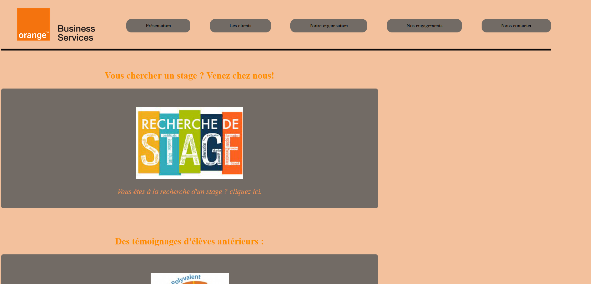

Je m'appelle Constant et je suis étudiant en première année de BUT informatique a l'IUT2 de Gernoble.
Mes passions tournent autour de l'informatique, les jeux video et la musique.
Grâce à mon BUT et au differant projets qui sont proposés je devemoppe des aptitudes dans la programation, l'administration de base de données et de resaux
☎ tel : 07 68 04 73 77
📧 mail : Constant.Trimaille@etu.univ-grenoble-alpes.fr
Dans le cardre de ma formation j'ai eu la possibilité de participer a des projets qui moon permis d'accerir et renforcer des competences.
Dans ce projets nous avons realiser en groupe un site en htmls et css pour un entreprise du numerique a destination de collegiens qui voudrait se renseigner pour un eventuel stage
Ce projet nous a demmender des competences de travail en equipe, de recherche de besoin et d'information ainsi que des competences de programation en html et css
le but de ce projet etais de coder en java un programe capable de trier des articles de presse en faonction de leur categorie.
dans ce projet nous avons egalement du renforcer notre capacité a travailler a plusieurs et ma permis de renforcer mes capacitées en java notament sur l'aproche algorithmique d'un probleme.
Dans ce projet il nous etais demander d'installer sur une machine virtuelle un systeme c'exploitation ainsi que des outils pour la programation.
Avec ce projet j'ai du travailler en autonomie j'ai aquis des competences en administration.
il nous etais egalement demander de creer un carte mental afin d'expliquer notre travail.
Dans ce projet nous avons realisé en duo une base de données en sql pour synthétiser des information sur le naufrage du Titanic.
Cela ma permis de mettre en oeuvre mes compétances en sql notament la creation, la supression et l'interogtion d'une base dae données